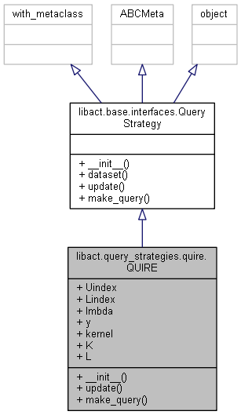

This module contains a class that implements an active learning algorithm
(query strategy): QUIRE
Class Diagram

Parameter
lambda: float, optional (default=1.0).
A regularization parameter used in the regularization learning framework.kernel: {‘linear’, ‘poly’, ‘rbf’, callable}, optional (default='rbf').
Specifies the kernel type to be used in the algorithm.
It must be one of ‘linear’, ‘poly’, ‘rbf’, or a callable.
If a callable is given it is used to pre-compute the kernel matrix from data matrices and that matrix should be an array of shape(n_samples, n_samples).degree: int, optional (default=3).
Degree of the polynomial kernel function (‘poly’).
Ignored by all other kernels.gamma: float, optional (default=1).
Kernel coefficient for ‘rbf’, ‘poly’.coef0: float, optional (default=1).
Independent term in kernel function.
It is only significant in ‘poly’.
No Attribute documented.
Example
Here is an example of declaring a QUIRE query_strategy object:
|
|
Derivation
The problem
Let $f^*$ be a classification model trained by the labeled example, i.e.,
$$f^* = \arg\min_{f \in H} \frac{\lambda}{2} \vert f \vert_H^2 + \sum_{i=1}^{n_l} l(y_i, f(x_i))$$
Where $H$ is a reproducing kernel Hilbert space, and $l()$ is the loss function.
Given the classifier $f^*$, the margin-based approach choose the unlabeled instance closest to the decision boundary, i.e.,
$$s^* = \arg\min_{n_l < s \leq n} \vert f^*(x_s) \vert$$
We approximate the criterion by writing it this way:
$$s^* = \arg\min_{n_l < s \leq n} L(D_l, x_s)$$
Where
$$L(D_l, x_s) = \max_{y_s = \pm 1} \min_{f \in H} \frac{\lambda}{2} \vert f \vert_H^2 + \sum_{i=1}^{n_l} l(y_i, f(x_i)) + l(y_s, f(x_s))$$.
We extend the evaluation function $L(D_l, x_s)$ to include all the unlabeled data. If we know the label assignments of the unlabeled instance $y_u$ in unlabeled data $D_u$, the evaluation function will be like this:
$$L(D_l, D_u, y_u, x_s) = \max_{y_s = \pm 1} \min_{f \in H} \frac{\lambda}{2} \vert f \vert_H^2 + \sum_{i=1}^{n} l(y_i, f(x_i)) $$
We expect that a good solution for $y_u$ should result in a small value of $L(D_l, D_u, y_u, x_s)$. Therefore we approximate the solution for $y_u$ by minimizing $L(D_l, D_u, y_u, x_s)$. So the evaluation function becomes like this:
$$
\begin{align*}
\hat{L}(D_l, D_u, x_s) &= \min_{y_u \in {\pm1}^{n^u-1}} L(D_l, D_u, y_u, x_s)\\
&= \min_{y_u \in {\pm1}^{n^u-1}} \max_{y_s = \pm 1} \min_{f \in H} \frac{\lambda}{2} \vert f \vert_H^2 + \sum_{i=1}^{n} l(y_i, f(x_i))
\end{align*}
$$
Finally the problem is defined like this:
$$
\begin{align*}
s^* &= \arg\min_{n_l < s \leq n} \hat{L}(D_l, D_u, x_s)\\
&=arg\min_{n_l < s \leq n} \min_{y_u \in {\pm1}^{n^u-1}} \max_{y_s = \pm 1} \min_{f \in H} \frac{\lambda}{2} \vert f \vert_H^2 + \sum_{i=1}^{n} l(y_i, f(x_i))
\end{align*}
$$
The solution
Choosing the quadratic loss function $l(y, \hat{y}) = \frac{(y - \hat{y})^2}{2}$, we can derive that
$$\min_{f \in H} \frac{\lambda}{2} \vert f \vert^2_H + \sum_{i=1}^n (y_i - f(x_i))^2 = \frac{1}{2} y^{\intercal}Ly$$
where $L = (K + \lambda I)^{-1}\tag{1}$ and $K = [k(x_i, x_j)]_{n \times n}$ is the kernel matrix of size $n \times n$. So the problem becomes:
$$
\begin{align*}
s^* &= \arg\min_{n_l < s \leq n} \hat{L}(D_l, D_u, x_s)\\
&= arg\min_{n_l < s \leq n} \min_{y_u \in {\pm1}^{n^u-1}} \max_{y_s = \pm 1} \frac{1}{2} y^{\intercal}Ly
\end{align*}
$$
We use subscript $u$ to refer to the unlabeled rows/columns in a matrix $M$;
we use subscript $l$ to refer to the labeled rows/columns in a matrix $M$;
we use subscript $s$ to refer to the selected rows/columns in a matrix $M$.
So we can rewrite the objective function $y^{\intercal}Ly$:
$$y^{\intercal}Ly = y_lL_{l,l}y_l + L_{s,s} + y^{\intercal}_u L_{u,u}y_u + 2y^{\intercal}_u(L_{u,l}y_l + L_{u,s}y_s) + 2y_sy^{\intercal}_l L_{l,s}\tag{2}$$.
Notice that the objective function is concave(linear) in $y_s$ and convex (quadratic) in $y_u$, we can switch the maximization of $y_u$ with the minimization of $y_s$. So the problem becomes:
$$s^* = arg\min_{n_l < s \leq n} \max_{y_s = \pm 1} \min_{y_u \in {\pm1}^{n^u-1}} \frac{1}{2} y^{\intercal}Ly$$
Then we relax $y_u$ to continuous variables, and substitute $y^{\intercal}Ly$ with $(2)$, we can solve the minimization of $y_u$:
$$
\begin{align*}
\hat{y}_u &= \arg \min_{y_u \in [-1, 1]^{n^u-1}} \frac{1}{2} y^{\intercal}Ly\\
&= -L_{u,u}^{-1}(L_{u,l}y_l + L_{u,s}y_s) \tag{3}
\end{align*}
$$
Then we substitute $y_u$ in $(2)$ with $\hat{y}_u$ using $(3)$, the evaluation function becomes like this:
$$
\begin{align*}
\hat{L}(D_l, D_u, x_s) &= \max_{y_s = \pm 1}\min_{y_u \in [-1, 1]^{n^u-1}} \frac{1}{2} y^{\intercal}Ly \\
&= \max_{y_s = \pm 1}{ L_{s,s} + y^{\intercal}_lL_{l,l}y_l + 2y_sL_{s,l}y_l - (L_{u,l}y_l + L_{u,s}y_s)^{\intercal}L_{u,u}^{-1}(L_{u,l}y_l + L_{u,s}y_s)}\\
&= L_{s,s} + y^{\intercal}_lL_{l,l}y_l + \max_{y_s = \pm 1}{ 2y_sL_{s,l}y_l - (L_{u,l}y_l + L_{u,s}y_s)^{\intercal}L_{u,u}^{-1}(L_{u,l}y_l + L_{u,s}y_s) } \\
& \propto L_{s,s} - \frac{\det L_{a,a}}{L_{s,s}} + 2 \vert (L_{s,l} - L_{s,u}L_{u,u}^{-1}L_{u,l})y_l\vert \tag{4}
\end{align*}
$$
where the last step follows the relation:
$$\det
\begin{pmatrix}
A_{11} & A_{12} \\
A_{21} & A_{22}
\end{pmatrix} = \det(A_{22})\det(A_{11} - A_{12}A_{22}^{-1}A_{21})
\tag{?}
$$
The algorithm
We are going to use $(4)$ to compute the evaluation function, but every round we choose a instance to query we have to compute $L_{u,u}^{-1}$ (since unlabeled instances change when we change $s$). It could be inefficient. So we use the following equation to reduce the computational cost.
$$L_{u,u}^{-1} = D - \frac{1}{a} bb^{\intercal}\tag{5}$$
where
$$L_{a,a}^{-1} =
\begin{pmatrix}
L_{s,s} & L_{s,u} \\
L_{u,s} & L_{u,u}
\end{pmatrix}
=
\begin{pmatrix}
a & -b^{\intercal} \\
-b & D
\end{pmatrix}
$$
Also, we use the following equation to compute $L_{a,a}^{-1}$:
$$L_{a,a}^{-1} = (\lambda I_a + K_{a,a}) - K_{a,l}(\lambda I_l + K_{l,l})^{-1} K_{l,a} \tag{6}$$
So the algorithm goes like this:
1 initialize:
2 $D_l = \varnothing$, $n_l = 0$;
3 $D_u = D$, $n_u = n$.
4
5 Calculate $K$ and $L$ using $(1)$;
6 repeat:
7 Calculate $L_{a,a}^{-1}$ using $(6)$ and $\det(L_{a,a})$;
8 for $s = 1$ to $n_u$ do
9 Calculate $L_{u,u}^{-1}$ using $(5)$;
10 Calcualte $\hat{L}(D_l, D_u, x_s)$ using $(4)$
11 end for
12 Select the $x_{s^*}$ with the smallest $\hat{L}$ and query its label $y_{s^*}$.
13 Update the dataset $D_l = D_l \cup (x_{s^*}, y_{s^*})$, $D_u = D_u \backslash x_s$.
14 until the budget is met or the required accuracy is reached.
snippets
__init()__
|
|
Note
a) dictionary.pop()
Pop up the value in the dict with default and remove the value afterwards.
b) sklearn.metrics.pairwise.linear_kernel()
sklearn.metrics.pairwise.linear_kernel(X, Y=None).
Compute the linear kernel between X and Y.
Parameters:
- X: array of shape (n_samples_1, n_features)
- Y: array of shape (n_samples_2, n_features)
|
|
There are also polynominal_kernel, rbf_kernel, sigmoid kernel etc.
make_query()
|
|
Note
a) bisect
Insert an element to a sorted array (or find the inserting position of a sorted array).insort – bisectinsort_left – bisect_leftinsort_right – insort_left
e.g.
b) np.ix
Construct an open mesh from multiple sequences.
Using ix_ one can quickly construct index arrays that will index the cross product. a[np.ix_([1,3],[2,5])] returns the array [[a[1,2] a[1,5]], [a[3,2] a[3,5]]].
e.g.
Reference:
[1] S.-J. Huang, R. Jin, and Z.-H. Zhou. Active learning by querying informative and representative examples.